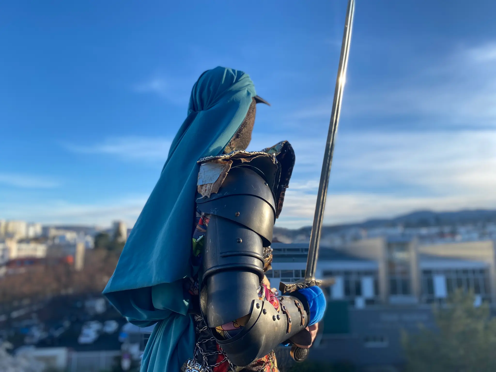

— Logan De Carvalho (2026) / Théâtre

Je vous mets directement le résumé 📝 écrite pour les différentes représentations de cette pèce de théâtre car je suis très très nulle en résumé,
si vous avez lu ma première story à propos de la première séance que j'ai visonné durant le Festival, je suis très nulle en résumé — c'est pourquoi après je mettais seulement les
résumés du site web.
Comment faire lutte commune dans un monde toujours plus fragmenté? Logan De Carvalho fait un détour par l’ heroic fantasy pour interroger le mythe du vivre-ensemble, dans une aventure
théâtrale pleine de surprises qui réconcilie les êtres comme les genres.
Au royaume de Nelvar, elfes, orcs, trolls et mages cohabitent malgré leurs histoires et aspirations divergentes.
Mais, à la mort d’un roi sans héritier, ce fragile équilibre vacille. Partant d’un groupe d’acteur·rices qui donnent vie avec humour à ces créatures sur scène, Logan De Carvalho décortique les fictions les plus contemporaines à travers les archétypes
assumés de la fantasy : à chaque espèce, un registre de langage emprunté aux codes sociaux d’aujourd’hui. Les comédien·nes endossent tour à tour le rôle de narrateur·rice, faisant surgir les paysages et les légendes de ce monde fictif.
La musique, jouée en direct, fait exister les combats d’épées ou les traversées de montagnes, nous laissant glisser peu à peu vers le merveilleux. Un théâtre populaire et exigeant, comme un miroir magique où l’imaginaire invite à mieux comprendre l’autre – et soi-même.
Nous avons eu la chance de pouvoir voir gratuitement ce spectacle grâce au dispositif Si T Jeune, pour celleux qui ne connaîtraient pas, c'est en fait une carte délivrée par la Ville pour tout jeune de 12 à 27 ans,
travaillant, résident ou étudiant de CLermont-Fd, cette carte offre de nombreux prix préférentiels dans un tas de structures de la Ville — je pense particulièrement à La Coopérative de Mai. De plus, ils proposent aussi souvent des activités
sportives totalement gratuites & pour ce coup-ci ils nous proposaient — sur places limitées — de voir cette pièce de théâtre précédée d'une visite guidée de La Comédie ce Clermont-Fd (labellisée scène nationale depuis 1997).
Comme pour le FRAC Auvergne, je trouve
que je ne vais pas assez régulièrement dans cette salle de spectacle — sachant que je ne suis pas forcément fan de danse ça réduit les spectacle que je pourrais voir — ma dernère séance coup de 🤍 là-bas
a été la pièce de théâtre « LE FIRMAMENT » — écrit par Lucy Kirkwood & mis en scène par Chloé Dabert, une sorte de reprise du film « 12 HOMMES EN COLÈRE » — Sidney Lumet (1957) mais avec des femmes. Je ne sais pas si une captation
existe — mais si c'est le cas je ne peux que vous la conseiller. Je ne mets pas le résumé car ce n'est pas le sujet de cette critique mais si vous voulez vous renseigner, n'héistez pas à faire vos recherches sur Internet. D'ailleurs, j'avais vu cette répresentation gratuitement lorsque j'étais bénévole à l'association AFEV Auvergne,
une magnifique association d'utilié publique donc si vous voulez y être volontaire je vous mets le site internet juste ici : AFEV Auvergne.
DONNER NOTRE AVIS